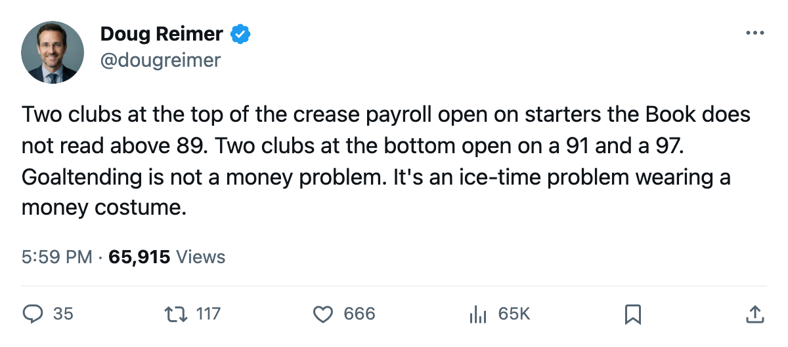
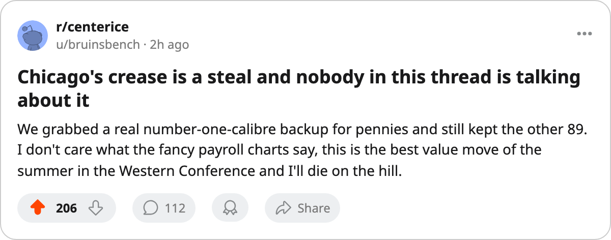

The Net Ledger: Chicago Spent $4.54M to Open Behind an 89. San Jose Spent $18.03M for an 85.
The summer emptied two creases and moved a third. Where the league put its goaltending money did not follow where it put its goaltending talent.
 Doug ReimerAnalytics editor, ex-video coach · The Slot Report
Doug ReimerAnalytics editor, ex-video coach · The Slot Report
The cheapest goaltending package in hockey that still opens a season on an 89 belongs to  Chicago Blackhawks, and it is not close. Chicago carries $4.54M on its goaltenders. It opens behind Ari Ahonen87, graded 89 in the Bureau's Book, on a contract with one line left at $0.80M.
Chicago Blackhawks, and it is not close. Chicago carries $4.54M on its goaltenders. It opens behind Ari Ahonen87, graded 89 in the Bureau's Book, on a contract with one line left at $0.80M.  San Jose Sharks carries the league's most expensive crease at $18.03M and opens behind a goaltender graded 85.
San Jose Sharks carries the league's most expensive crease at $18.03M and opens behind a goaltender graded 85.
The method is simple and I will state it before I make the argument. For every club I summed the current salaries of all goaltenders on the roster. I lined that against the Book grade of the man the workload table shows in the first net, and against his own salary and contract years. Goalie ice time is the least-shared resource on a roster, so the question is whether the grade at 60 minutes arrives with the money.
The league spent big in goaltending over the summer without buying the top of the position. San Jose Sharks at $18.03M and  Montreal Canadiens at $16.43M lead all creases. San Jose's money buys
Montreal Canadiens at $16.43M lead all creases. San Jose's money buys  Evgeni Nabokov87 at 85 and $9.99M. Montreal's buys
Evgeni Nabokov87 at 85 and $9.99M. Montreal's buys  Jose Theodore93 at 89 on $5.50M with one year left, plus Dwayne Roloson at 84 on $7.33M. Two clubs near the top of the spending column do not have a starter rated above 89. The two clubs at the very bottom of the column,
Jose Theodore93 at 89 on $5.50M with one year left, plus Dwayne Roloson at 84 on $7.33M. Two clubs near the top of the spending column do not have a starter rated above 89. The two clubs at the very bottom of the column,  Toronto Maple Leafs at $3.70M and
Toronto Maple Leafs at $3.70M and  Nashville Predators at $2.20M, open behind a 97 and a 91. The money is spread flat against the talent, and a handful of rooms bought form on the cheap while others bought names.
Nashville Predators at $2.20M, open behind a 97 and a 91. The money is spread flat against the talent, and a handful of rooms bought form on the cheap while others bought names.
The two creases the summer emptied
Two goaltenders retired rather than move. Ed Belfour, 40, rated 91, left  Ottawa Senators for the pool. Dominik Hasek, 40, rated 84, did the same at
Ottawa Senators for the pool. Dominik Hasek, 40, rated 84, did the same at  Detroit Red Wings. Those are the league's two oldest netminders and the position's deepest bench, and both are gone.
Detroit Red Wings. Those are the league's two oldest netminders and the position's deepest bench, and both are gone.
Ottawa's answer so far is a committee. Ray Emery86, 84 and $0.60M with one year left, started the first two.  Patrick Lalime92, graded 90 on $1.90M, also expiring, took the other start. The Senators lost a 91 and replaced him with an 84 and a 90 who both walk in June, and the payroll did not move at all: $58.72M in, $58.72M out. Detroit's answer is steadier.
Patrick Lalime92, graded 90 on $1.90M, also expiring, took the other start. The Senators lost a 91 and replaced him with an 84 and a 90 who both walk in June, and the payroll did not move at all: $58.72M in, $58.72M out. Detroit's answer is steadier.  Manny Legace91, 86 and $1.20M with one year left, opened ahead of
Manny Legace91, 86 and $1.20M with one year left, opened ahead of  Curtis Joseph91, 84 on $8.00M who also carries an expiring deal. The Red Wings lost a 84 and brought up an 86 for less than a sixth of Joseph's money.
Curtis Joseph91, 84 on $8.00M who also carries an expiring deal. The Red Wings lost a 84 and brought up an 86 for less than a sixth of Joseph's money.
Chicago took the cheap 89 off New Jersey's hands
The cleanest piece of value in the offseason came out of a goaltender swap between Chicago Blackhawks and  New Jersey Devils. Chicago sent Michael Leighton (80), Steve Passmore (75) and defenseman Nathan Dempsey to New Jersey. It took back Ahonen, then graded 87 and now 89, at $0.80M. Chicago also kept
New Jersey Devils. Chicago sent Michael Leighton (80), Steve Passmore (75) and defenseman Nathan Dempsey to New Jersey. It took back Ahonen, then graded 87 and now 89, at $0.80M. Chicago also kept  Jocelyn Thibault87, 89 on $2.80M with one year left.
Jocelyn Thibault87, 89 on $2.80M with one year left.
So the Blackhawks walk into the season with two goaltenders the Book reads at 89, on $0.80M and $2.80M respectively, inside a $4.54M crease. New Jersey already had  Martin Brodeur95, 95, locked up for three more years at $6.70M. Behind him the Devils now hold Leighton and Passmore. They gave up the better backup for cap space they did not need and a body on the blue line, and they remain the cheapest path to a 95 in the league's first net.
Martin Brodeur95, 95, locked up for three more years at $6.70M. Behind him the Devils now hold Leighton and Passmore. They gave up the better backup for cap space they did not need and a body on the blue line, and they remain the cheapest path to a 95 in the league's first net.
Brodeur plays 70 games, so the swap was not wrong for New Jersey. But a team can pay $10.09M on net and use none of it to raise its floor, and a team can pay $4.54M and raise its ceiling by two grades.
Every crease, as it opens
The table below is the whole league: crease payroll from the roster, the opening starter per the workload table, his Book grade, his salary, and the years left on it. Read the two columns of money against the one column of grade and the disorder is plain.
 Mighty Ducks of Anaheim
Mighty Ducks of Anaheim
 Minnesota Wild
Minnesota Wild
 Buffalo Sabres
Buffalo Sabres


 Carolina Hurricanes
Carolina Hurricanes
 Vancouver Canucks
Vancouver Canucks
 Tampa Bay Lightning
Tampa Bay Lightning
 New York Rangers
New York Rangers
 Washington Capitals
Washington Capitals


 Atlanta Thrashers
Atlanta Thrashers
 Calgary Flames
Calgary Flames
 Pittsburgh Penguins
Pittsburgh Penguins
 Colorado Avalanche
Colorado Avalanche

 Edmonton Oilers
Edmonton Oilers


The grade the money did not buy
Three things fall out of the column pair.
The top of the position is not where the payroll is. The five highest creases in the league, San Jose, Montreal, Anaheim, Minnesota and Buffalo, carry one starter between them above 89, at Anaheim. Buffalo spends $13.07M on net and opens on Ryan Miller, 78, ahead of  Martin Biron87 at 88 who did not take the first start. That is the most money in the league spending on the lowest opening grade, and it is a choice about who plays 60 minutes, which is exactly the resource I think clubs waste most.
Martin Biron87 at 88 who did not take the first start. That is the most money in the league spending on the lowest opening grade, and it is a choice about who plays 60 minutes, which is exactly the resource I think clubs waste most.
The value sits at the cheap end. The three lowest creases,  Philadelphia Flyers, Nashville Predators, Toronto Maple Leafs, open behind a 76, a 91 and a 97. Nashville's $2.20M is the cheapest net in hockey and it brought in Tomas Vokoun at 91 on $0.90M. Toronto's $3.70M is a hair more and it opens on a 97. Nobody paid for those two the way San Jose paid for Nabokov.
Philadelphia Flyers, Nashville Predators, Toronto Maple Leafs, open behind a 76, a 91 and a 97. Nashville's $2.20M is the cheapest net in hockey and it brought in Tomas Vokoun at 91 on $0.90M. Toronto's $3.70M is a hair more and it opens on a 97. Nobody paid for those two the way San Jose paid for Nabokov.
And a third of the league starts the year on a goaltender who can walk in June.  Boston Bruins,
Boston Bruins,  Columbus Blue Jackets, Chicago Blackhawks,
Columbus Blue Jackets, Chicago Blackhawks,  Dallas Stars,
Dallas Stars,  Florida Panthers,
Florida Panthers,  Los Angeles Kings, Montreal Canadiens,
Los Angeles Kings, Montreal Canadiens,  New York Islanders, Ottawa Senators,
New York Islanders, Ottawa Senators,  Phoenix Coyotes and
Phoenix Coyotes and  St. Louis Blues all open on an expiring deal. Some of those are bargains and some are $5.50M on a 89 with no club after June. The next two months tell you which rooms re-sign and which ones go shopping in a market this league keeps telling itself is empty.
St. Louis Blues all open on an expiring deal. Some of those are bargains and some are $5.50M on a 89 with no club after June. The next two months tell you which rooms re-sign and which ones go shopping in a market this league keeps telling itself is empty.

